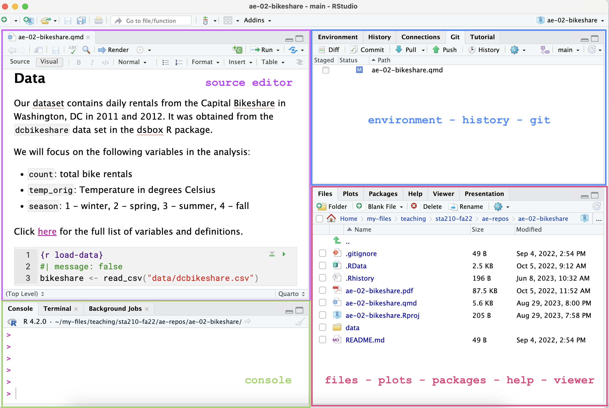

library(tidyverse)
library(knitr)Lab 01: Computing + linear algebra review
Due date
This lab is due on Tuesday, January 21 at 11:59pm. To be considered on time, the following must be done by the due date:
- Final
.qmdand.pdffiles pushed to your GitHub repo - Final
.pdffile submitted on Gradescope
Introduction
This lab will review of some linear algebra concepts that will be used in this course and go through the computing workflow we’ll use in class. The main goal is to reinforce our knowledge of matrix operations and of R and RStudio. We will use these throughout the course, both to learn the statistical concepts discussed in the lecture and to analyze real data and come to informed conclusions.
Note
R is the name of the programming language itself and RStudio is a convenient interface.
An additional goal is to reinforce git and GitHub, the collaboration and version control system that we will be using throughout the course.
Note
Git is a version control system (like “Track Changes” features from Microsoft Word but more powerful) and GitHub is the home for your Git-based projects on the internet (like DropBox but much better).
To make versioning simpler, this lab is an individual assignment. In the future, you’ll learn about collaborating on GitHub and producing a single lab report for your lab team. For now, concentrate on getting the basics down.
Learning goals
By the end of the lab, you will…
- Recall some basic matrix operations and linear algebra rules
- Be familiar with the workflow using RStudio and GitHub
- Gain practice writing a reproducible report using Quarto
- Practice version control using GitHub
- Be able to produce visualizations and summary statistics to describe distributions
Getting Started
Clone the repo & start new RStudio project
- Go to the course organization at github.com/sta221-sp25 organization on GitHub.
- Click on the repo with the prefix lab-01. It contains the starter documents you need to complete the lab.
- Click on the green CODE button, select Use SSH (this might already be selected by default, and if it is, you’ll see the text Clone with SSH). Click on the clipboard icon to copy the repo URL.
- See the Lab 00 instructions if you have not set up the SSH key or configured git.
- In RStudio, go to File \(\rightarrow\) New Project \(\rightarrow\) Version Control \(\rightarrow\) Git.
- Copy and paste the URL of your assignment repo into the dialog box Repository URL. Again, please make sure to have SSH highlighted under Clone when you copy the address.
- Click Create Project, and the files from your GitHub repo will be displayed in the Files pane in RStudio.
- Click
lab-01.qmdto open the template Quarto file. This is where you will write up your code and narrative for the lab.
R and R Studio
Below are the components of the RStudio IDE.

Below are the components of an Quarto (.qmd) file.

YAML
The top portion of your Quarto file (between the three dashed lines) is called YAML. It stands for “YAML Ain’t Markup Language”. It is a human friendly data serialization standard for all programming languages. All you need to know is that this area is called the YAML (we will refer to it as such) and that it contains meta information about your document.
Important
Open the Quarto (.qmd) file in your project, change the author name to your name, and render the document. Examine the rendered document.
Committing changes
Now, go to the Git pane in your RStudio instance. This will be in the top right hand corner in a separate tab.
If you have made changes to your Quarto (.qmd) file, you should see it listed here. Click on it to select it in this list and then click on Diff. This shows you the difference between the last committed state of the document and its current state including changes. You should see deletions in red and additions in green.
If you’re happy with these changes, we’ll prepare the changes to be pushed to your remote repository. First, stage your changes by checking the appropriate box on the files you want to prepare. Next, write a meaningful commit message (for instance, “updated author name”) in the Commit message box. Finally, click Commit. Note that every commit needs to have a commit message associated with it.
You don’t have to commit after every change, as this would get quite tedious. You should commit states that are meaningful to you for inspection, comparison, or restoration.
In the first few assignments we will tell you exactly when to commit and in some cases, what commit message to use. As the semester progresses we will let you make these decisions.
Now let’s make sure all the changes went to GitHub. Go to your GitHub repo and refresh the page. You should see your commit message next to the updated files. If you see this, all your changes are on GitHub and you’re good to go!
Push changes
Now that you have made an update and committed this change, it’s time to push these changes to your repo on GitHub.
In order to push your changes to GitHub, you must have staged your commit to be pushed. click on Push.
Packages
We will use the following packages in today’s lab.
Computing Review
Data: Ikea furniture
Today’s data is all about Ikea furniture. The data was obtained from the TidyTuesday data collection.
Use the code below to read in the data.
ikea <- read_csv("data/ikea.csv")The variable definitions are as follows:
| variable | class | description |
|---|---|---|
| item_id | double | item id which can be used later to merge with other IKEA data frames |
| name | character | the commercial name of items |
| category | character | the furniture category that the item belongs to (Sofas, beds, chairs, Trolleys,…) |
| sellable_online | logical | Sellable online TRUE or FALSE |
| link | character | the web link of the item |
| other_colors | character | if other colors are available for the item, or just one color as displayed in the website (Boolean) |
| short_description | character | a brief description of the item |
| designer | character | The name of the designer who designed the item. this is extracted from the full_description column. |
| depth | double | Depth of the item in centimeters |
| height | double | Height of the item in centimeters |
| width | double | Width of the item in centimeters |
| price_usd | double | the current price in US dollars as it is shown in the website by 4/20/2020 |
Exercises
Goal: You would like to use statistical analysis to understand better understand the expected cost for different types of furniture and how the cost is expected to change based on width.
Instructions
Write all code and narrative in your Quarto file. Write all narrative in complete sentences. Throughout the assignment, you should periodically render your Quarto document to produce the updated PDF, commit the changes in the Git pane, and push the updated files to GitHub.
Tip
Make sure we can read all of your code in your PDF document. This means you will need to break up long lines of code. One way to help avoid long lines of code is is start a new line after every pipe (|>) and plus sign (+).
Exercise 1
Viewing a summary of the data is a useful starting point for data analysis, especially if the data set has a large number of observations (rows) or variables (columns). Run the code below to use the glimpse function to see a summary of the ikea data set.
How many observations are in the ikea data set? How many variables?
glimpse(ikea)
Note
In your `lab-01.qmd` document you’ll see that we already added the code required for the exercise as well as a sentence where you can fill in the blanks to report the answer. Use this format for the remaining exercises.
Also note that the code chunk has a label: glimpse-data. Labeling your code chunks is not required, but it is good practice and highly encouraged.
Exercise 2
We begin each regression analysis with exploratory data analysis (EDA) to help us “get to know” the data and examine the variable distributions and relationships between variables. We do this by visualizing the data and calculating summary statistics to describe the variables in our data set. In this lab, we will focus on data visualizations.
When we make visualizations, we want them to be clear and suitable to present to a professional audience. This means that, at a minimum, each visualization should have an informative title and informative axis labels.
Fill in the code below to visualize the distribution of price_usd, the price in US dollars.
ggplot(data = ikea, aes(x = _____)) +
geom_histogram() +
labs(x = "_____",
y = "_____",
title = "_____")Exercise 3
Use the visualization to describe the distribution of price. In your narrative, include descriptions of the shape, approximate center, approximate spread, and any presence of outliers. Briefly explain why the median is more representative of the center of this distribution than the mean.
Note: You may compute summary statistics to more precisely describe the center and spread.
This is a good place to render, commit, and push changes to your lab-01 repo on GitHub. Write an informative commit message (e.g. “Completed exercises 1 - 3”), and push every file to GitHub by clicking the check box next to each file in the Git pane. After you push the changes, the Git pane in RStudio should be empty.
Exercise 4
In this course, we’ll be most interested in the relationship between two or more variables, so let’s begin by looking at the distribution of price by category. We’ll focus on two categories, Sofas & armchairs and Bookcases & shelving units, since these may be types of furniture most useful to furnish an office.
Fill in the code below to create a new data frame called ikea_sub that only includes the furniture categories of interest. We’re assigning this subsetted data frame to an object with a new name, so we don’t overwrite the original data.
ikea_sub <- ikea |>
filter(_____ %in% c( "_____",
"_____"))Now, run the code below to remove observations that have that have a missing value for at least one of width or price_usd.
ikea_sub <- ikea_sub |>
drop_na(width, price_usd)How many observations are in the ikea_sub data frame? How many variables?
Important
Use the ikea_sub data frame for the remainder of lab.
Exercise 5
Create a visualization of the relationship between the width and price of your items at Ikea in the two categories of interest. Include informative axis labels and an informative title. Use the visualization to describe the relationship between the two variables.
Then, recreate your visualization, but now adding color based on furniture category. Comment on your observations from this visualization.
Note: Show both visualizations in the response.
This is a good place to render, commit, and push changes to your lab-01 repo on GitHub. Write an informative commit message (e.g. “Completed exercises 4 - 5”), and push every file to GitHub by clicking the check box next to each file in the Git pane. After you push the changes, the Git pane in RStudio should be empty.
Linear Algebra Review
Instructions
The conceptual exercises are focused on explaining concepts and showing results mathematically. Show your work for each question.
Put any relevant R code in the Quarto document. You may write the answers and show any associated work for conceptual exercises by hand or type them in your Quarto document using LaTex.
Let
\[ A = \begin{bmatrix} 1 & 2\\ 3 & 4\\ 5 & 6\end{bmatrix}, \qquad B = \begin{bmatrix} 1 & 1 & 1 & 1\\ 0 & 1 & 2 & 3 \end{bmatrix}, \qquad C = \begin{bmatrix} 1 & 4\\ 2 & 5\\ 3 & 6\end{bmatrix} \qquad \]
\[ \mathbf{X} = \begin{bmatrix} x_{11} & x_{12}& \dots & x_{1p}\\ x_{21} & x_{22}& \dots & x_{2p}\\ \vdots & \vdots& \ddots & \vdots\\ x_{n1} & x_{n2}& \dots & x_{np}\\\end{bmatrix} \]
Exercise 6
Write the dimensions of the following matrices:
\(A\)
\(B\)
\(A^\top\)
\(\mathbf{X}\)
\(\mathbf{X}^\top\)
Exercise 7
i. Which of the following is a proper matrix multiplication operation? Explain why.
\(A\times C\)
\(A\times B\)
\(A^\top \times B\)
\(B \times A\)
\(B^\top \times C\)
\(B\times B\)
ii. Perform the multiplication you chose in part (i).
Matrix operations in R
R has built in matrix tools such as addition, multiplication, transpose, etc. We will now practice using these tools to review some matrix properties.
We first begin by creating matrices using matrix() function. We provide elements of our matrices as the data argument and specify how many rows our matrices have. byrow = TRUE allows us to fill the matrix by row.
A <- matrix(data = c(1, 2,
3, 4,
5, 6),
nrow = 3,
byrow = TRUE)
B <- matrix(data = c(1, 1, 1, 1,
0, 1, 2, 3),
nrow = 2,
byrow = TRUE)
C <- matrix(data = c(1, 4,
2, 5,
3, 6),
nrow = 3,
byrow = TRUE) You can learn more about matrix() function by typing ?matrix in console.
Exercise 8
i. To perform addition or subtraction, we can simply use a + or - operators.
# Add A and C
A + C [,1] [,2]
[1,] 2 6
[2,] 5 9
[3,] 8 12Using R, find \(C + A\). Is addition commutative (i.e. does \(A + C = C + A\))? Show the work to support your response.
ii. In R, we have to use a special matrix multiplication operator, %*% .
# multiply A and B
A %*% B [,1] [,2] [,3] [,4]
[1,] 1 3 5 7
[2,] 3 7 11 15
[3,] 5 11 17 23Does the output match your answer to Exercise 7 (ii)? What happens if you try to multiply \(B\times A\) in R?
Warning
Matrix multiplication is not commutative! Matrix multiplication satisfies left and right distributivity: \((\mathbf{A} + \mathbf{B}) \mathbf{C} = \mathbf{A}\mathbf{C} + \mathbf{B}\mathbf{C}\), and \(\mathbf{A}( \mathbf{B}+ \mathbf{C}) = \mathbf{A}\mathbf{B} + \mathbf{A}\mathbf{C}\), but the order here matters. \((\mathbf{A} + \mathbf{B}) \mathbf{C} \neq \mathbf{C}\mathbf{A} +\mathbf{C} \mathbf{B}\), and \(\mathbf{A}( \mathbf{B}+ \mathbf{C}) \neq \mathbf{B}\mathbf{A} + \mathbf{C}\mathbf{A}\). Pay attention to the order and dimensions of matrices.
iii. In this class, we will work a lot with matrix transposes. You can transpose a matrix in R by applying t() function.
# transpose A
t(A) [,1] [,2] [,3]
[1,] 1 3 5
[2,] 2 4 6Find \(B^\top \times A^\top\) using R. How is your answer compare to the result of \(A\times B\) you found in previous part?
This is a good place to render, commit, and push changes to your lab-01 repo on GitHub. Write an informative commit message (e.g., “Completed exercises 6 - 8”), and push every file to GitHub by clicking the check box next to each file in the Git pane. After you push the changes, the Git pane in RStudio should be empty.
Exercise 9
Let \(\mathbf a = \begin{bmatrix}a_1 \\ \vdots \\ a_n\end{bmatrix}\) and \(\mathbf b = \begin{bmatrix}b_1 \\ \vdots \\ b_n\end{bmatrix}\). Recall, \[\mathbf{a}^\top \mathbf{a} = \sum_{i=1}^n a_i^2.\]
Write \((\mathbf{a} - \mathbf{b})^\top (\mathbf{a} - \mathbf{b})\) using summation notation.
More Linear Algebra
Recall the definition of linear dependence:
A sequence of vectors \(\mathbf{x_1}, \mathbf{x_2}, \dots, \mathbf{x_p}\) is said to be linearly dependent if there exists a series of scalars \(a_1, a_2, \dots, a_p\), not all zero, such that
\[ a_1 \mathbf{x_1} + a_2 \mathbf{x_2} + \dots + a_p \mathbf{x_p} = \mathbf{0} \] Further, matrix \(\mathbf{X}\) has full column rank if all of its columns are linearly independent.
For example, the following matrix is not full rank,
\[ \mathbf{X} = \begin{bmatrix} 1 & 2 & 3\\ 1 & 1 & 2 \end{bmatrix} \] since, letting letting \(\mathbf{x_1} = \begin{bmatrix}1\\1 \end{bmatrix}\), \(\mathbf{x_2} = \begin{bmatrix}2\\1 \end{bmatrix}\), \(\mathbf{x_3} = \begin{bmatrix}3\\2 \end{bmatrix}\), and letting \(a_1 = 1\), \(a_2 = 1\), and \(a_3 = -1\), we have:
\[ a_1 \mathbf{x_1} + a_2\mathbf{x_2} + a_3\mathbf{x_3} = \begin{bmatrix}1\\1 \end{bmatrix} + \begin{bmatrix}2\\1 \end{bmatrix} - \begin{bmatrix}3\\2 \end{bmatrix} = \mathbf{0}. \]
Exercise 10
For each of the following matrices, state whether it is full rank. If not full rank, show why (find corresponding coefficients \(a\)’s).
- \[\begin{bmatrix} 1 & 0 & 0\\ 1 & 1 & 0\\ 1 & 1 & 0\\ 1 & 0 & 1 \end{bmatrix}\]
- \[\begin{bmatrix} 0 & 0 & 1\\ 1 & 0 & 0\\ 1 & 0 & 0\\ 0 & 1 & 0 \end{bmatrix}\]
- \[\begin{bmatrix} 1 & 0 & 0 & 1\\ 1 & 1 & 0 & 0\\ 1 & 1 & 0 & 0\\ 1 & 0 & 1 & 0 \end{bmatrix}\]
Matrix calculus
This section contains some additional definitions and properties that we’ll use throughout this semester. There are no exercises to submit for this section.
Definition of gradient
Let \(\mathbf{x} = \begin{bmatrix}x_1 \\ x_2 \\ \vdots \\x_k\end{bmatrix}\)be a \(k \times 1\) vector and \(f(\mathbf{x})\) be a function of \(\mathbf{x}\).
Then \(\nabla_\mathbf{x}f\), the gradient of \(f\) with respect to \(\mathbf{x}\) is
\[ \nabla_\mathbf{x}f = \begin{bmatrix}\frac{\partial f}{\partial x_1} \\ \frac{\partial f}{\partial x_2} \\ \vdots \\ \frac{\partial f}{\partial x_k}\end{bmatrix} \]
For example, if \(\mathbf{x} = \begin{bmatrix}x_1\\x_2\end{bmatrix}\) and \(f(\mathbf{x}) = x_1^2 + x_1x_2 + x_2^2\), then \(\nabla_\mathbf{x}f = \begin{bmatrix}2x_1 + x_2\\ x_1 + 2x_2\end{bmatrix}\).
Gradient of \(\mathbf{x}^\top\mathbf{z}\)
Let \(\mathbf{x}\) be a \(k \times 1\) vector and \(\mathbf{z}\) be a \(k \times 1\) vector, such that \(\mathbf{z}\) is not a function of \(\mathbf{x}\) .
The gradient of \(\mathbf{x}^\top\mathbf{z}\) with respect to \(\mathbf{x}\) is
\[ \nabla_\mathbf{x} \hspace{1mm} \mathbf{x}^\top\mathbf{z} = \mathbf{z} \]
Gradient of \(\mathbf{x}^\top\mathbf{A}\mathbf{x}\)
Let \(\mathbf{x}\) be a \(k \times 1\) vector and \(\mathbf{A}\) be a \(k \times k\) matrix, such that \(\mathbf{A}\) is not a function of \(\mathbf{x}\) .
Then the gradient of \(\mathbf{x}^\top\mathbf{A}\mathbf{x}\) with respect to \(\mathbf{x}\) is
\[ \nabla_\mathbf{x} \hspace{1mm} \mathbf{x}^\top\mathbf{A}\mathbf{x} = (\mathbf{A}\mathbf{x} + \mathbf{A}^\top \mathbf{x}) = (\mathbf{A} + \mathbf{A}^\top)\mathbf{x} \]
If \(\mathbf{A}\) is symmetric, then
\[ (\mathbf{A} + \mathbf{A}^\top)\mathbf{x} = 2\mathbf{A}\mathbf{x} \]
In particular, given an \(n\times p\) matrix \(\mathbf{M}\), \(\mathbf{M^\top M}\) is symmetric, so \[ \nabla_\mathbf{x} \hspace{1mm} \mathbf{x}^\top\mathbf{M^\top M}\mathbf{x} = 2 \mathbf{M^\top M} \mathbf{x}. \]
You’re done and ready to submit your work! render, commit, and push all remaining changes. You can use the commit message “Done with Lab 1!”, and make sure you have pushed all the files to GitHub (your Git pane in RStudio should be empty) and that all documents are updated in your repo on GitHub. The PDF document you submit to Gradescope for the computing exercises should be identical to the rendered PDF with the computing exercises in your GitHub repo.
Submission
You will submit the PDF documents for labs, homework, and exams in to Gradescope as part of your final submission.
Warning
Before you wrap up the assignment, make sure all documents are updated on your GitHub repo. We will be checking these to make sure you have been practicing how to commit and push changes.
Remember – you must turn in a PDF file to the Gradescope page before the submission deadline for full credit.
If you write your responses to conceptual exercises by hand, you will need to combine your written work to the completed PDF for the applied exercises before submitting on Gradescope.
Instructions to combine PDFs:
Preview (Mac): support.apple.com/guide/preview/combine-pdfs-prvw43696/mac
Adobe (Mac or PC): helpx.adobe.com/acrobat/using/merging-files-single-pdf.html
Get free access to Adobe Acrobat as a Duke student: oit.duke.edu/help/articles/kb0030141/
To submit your assignment:
Access Gradescope through the menu on the STA 221 Canvas site.
Click on the assignment, and you’ll be prompted to submit it.
Mark the pages associated with each exercise. All of the pages of your lab should be associated with at least one question (i.e., should be “checked”).
Select the first page of your .PDF submission to be associated with the “Workflow & formatting” section.
Grading (50 pts)
This lab will be graded for completion, with each exercise worth 5 points. For example, if you complete all 10 exercises, you will receive a score of 50/50 for Lab 01. If you complete 7 exercises, you will receive a score of 35/50.
You will receive feedback on Lab 01, particularly on the computing review exercises, so you know what to expect for grading in future assignments.
Each assignment will have a portion associated with “Workflow & formatting”. This grade is to assess the reproducible workflow and document format. This includes having at least 3 informative commit messages, a neatly organized document with readable code and your name and the date updated in the YAML.
You will receive feedback about “Workflow & formatting” for this lab, so you know what to expect for grading in future assignments. It will not count towards the grade in Lab 01.
This assignment was written in collaboration with Kat Husar, a PhD student in Statistical Science at Duke University.